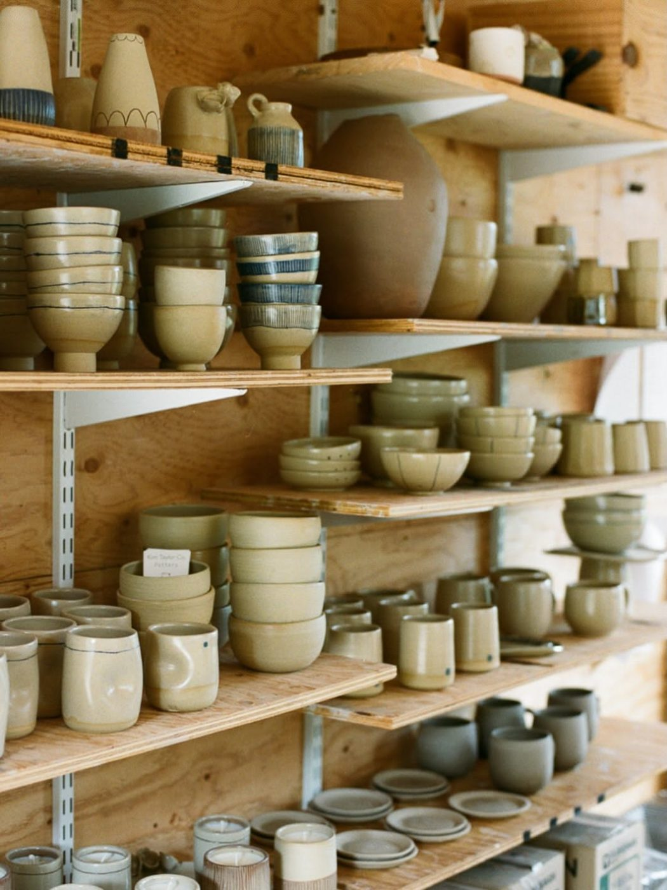
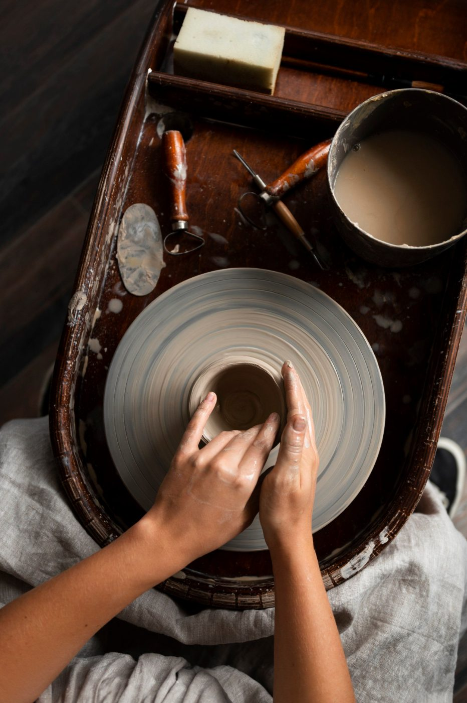

Visit
Unit 4, Tannery Yard, Mill Lane, Ferrow FW2 7QT. Shop open during studio hours. Membership for people with their own practice.
Hours
- Monday
- Closed
- Tuesday
- 10:00–21:00
- Wednesday
- 10:00–18:00
- Thursday
- 10:00–21:00
- Friday
- 10:00–18:00
- Saturday
- 10:00–17:00
- Sunday
- Classes only
Studio closed for the holidays. First loads after the break: Monday 4 January.

Getting here
- Train
- Ferrow station, 8 minutes on foot. Left out of the station, along Mill Lane, Tannery Yard is the second gate.
- Bus
- Route 14 to Tannery Yard, every 20 minutes until 19:30.
- Bike
- Six stands inside the yard gate.
- Car
- Two spaces for loading only. Pay-and-display on Mill Lane, £1.20 an hour.
- Access
- Shop, glaze room and kilns on the ground floor, step-free. The wheel room is up 6 steps; two wheels sit downstairs for anyone who needs them.
Open studio
For people who can centre and trim. A one-hour induction first, free.
| Item | Unit | Price |
|---|---|---|
| Open studio, 10 hours | Per month | £65 |
| Open studio, unlimited | Per month, during opening hours | £110 |
| Firing, members | Per litre of kiln space | £0.08 |
| Clay, buff stoneware | 12.5 kg bag | £22 |
Members use all 36 library glazes and every scheduled firing on the kiln calendar.
In the studio
- 12 wheels, 8 upstairs and 4 down
- Slab roller, 90 cm bed
- Glaze room with 36 buckets and a spray booth
- Electric kilns A and B, gas kiln C
- Clay reclaim and plaster bats
- Lockers for members, £6 a month
